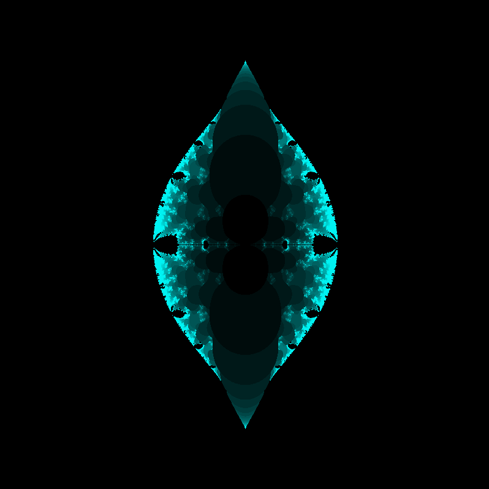

HTML5 Fractal Playground 1.3, May 17, 2014
I have had some more time to tinker with and tune my "HTML5 Fractal Playground" project. My newer work mostly focuses on the user interface,
though I did add two new iterating functions.
-
I moved most of the options into a jQuery-UI dialog. I provide buttons for most common operations along with keyboard shortcuts.
-
I added a [Fullscreen] button that allows the application to run fullscreen with HTML5.
-
I added another open-source library called "core-estimator". This library estimates the number of cores in your CPU to optimize the
parallel computations. The only drawback is that it takes a while to load, especially with Internet Explorer.
-
I added an experimental hash URL system that allows for specific locations within a fractal to be bookmarked. However, please don't count
on URLs in this version to work with future versions. I might need to change something to add new functionality. Please consider this
feature experimental for the time being.
-
With the hash URL syntax, you should be able to use the back button in the browser to return to a previously drawn fractal.
There is a known issue with this: you must wait for each fractal to draw, or else the program will try to draw two fractals at once.
I expect to fix this in the next version.
Assuming that a future version doesn't change the hash URL syntax, you can click on the pictures below to draw them in HTML5 Fractal Playground.
f(z) = sin(z / c)

f(z) = cos(z / c)

Deep zoom on f(z) = sin(z / c)